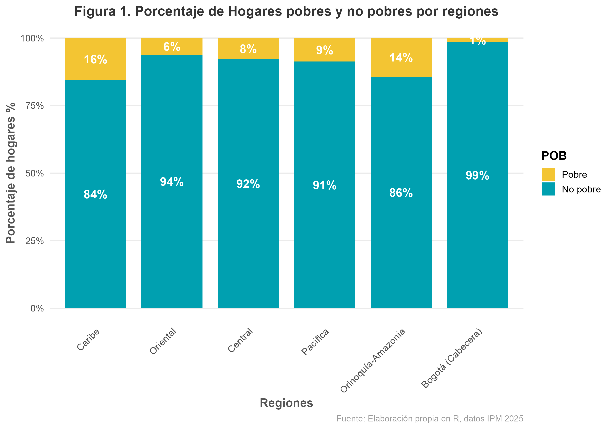
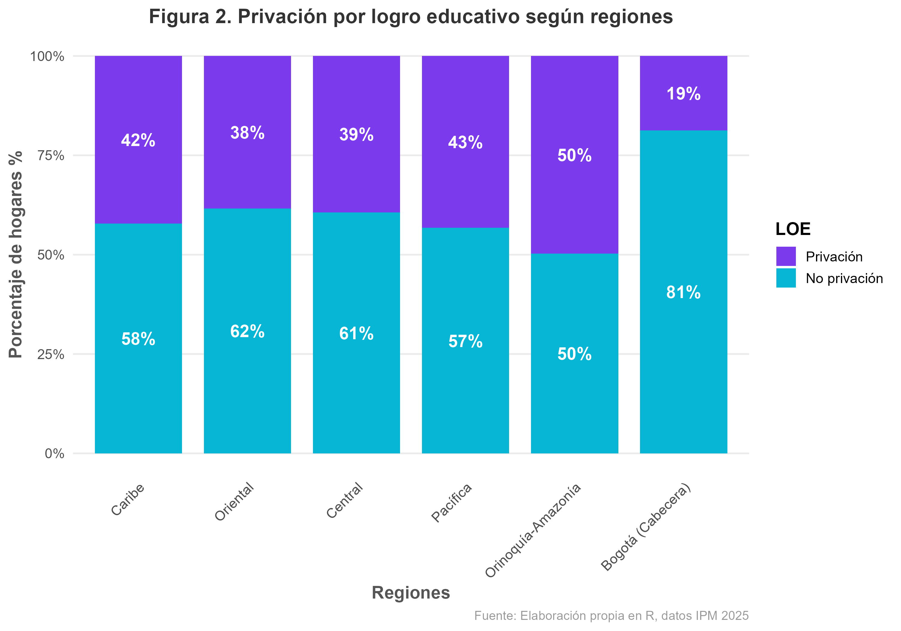
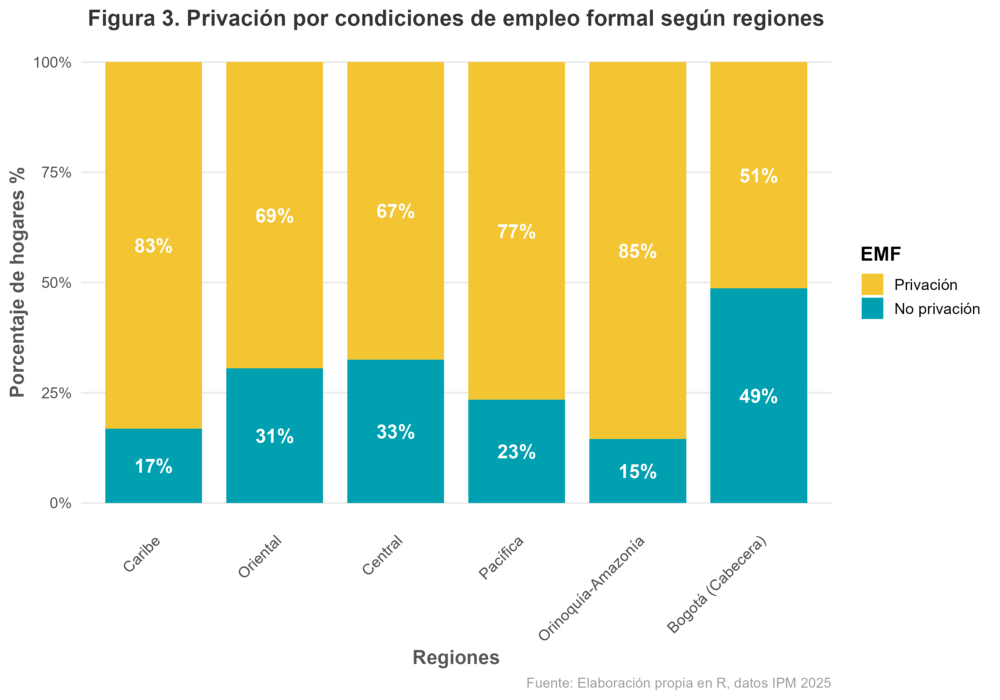
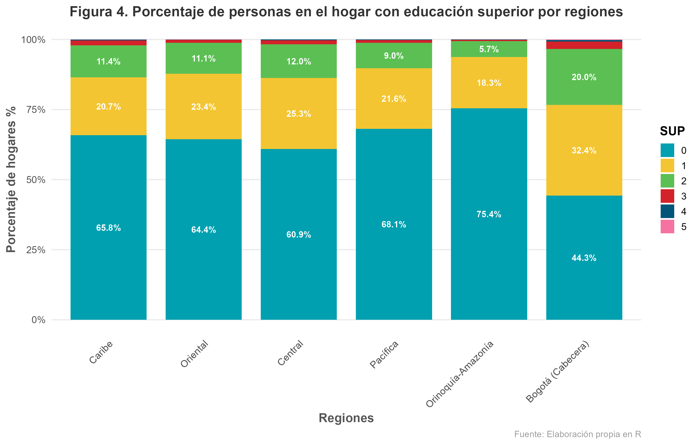
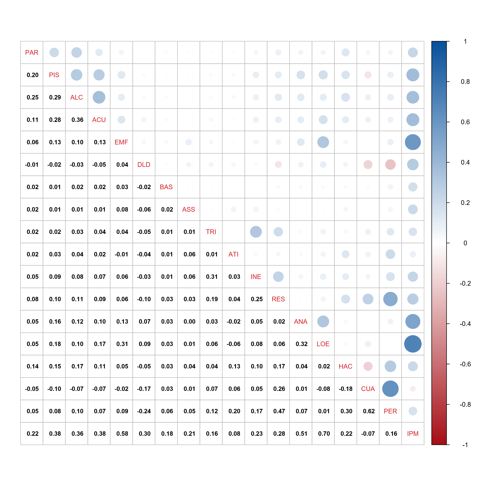
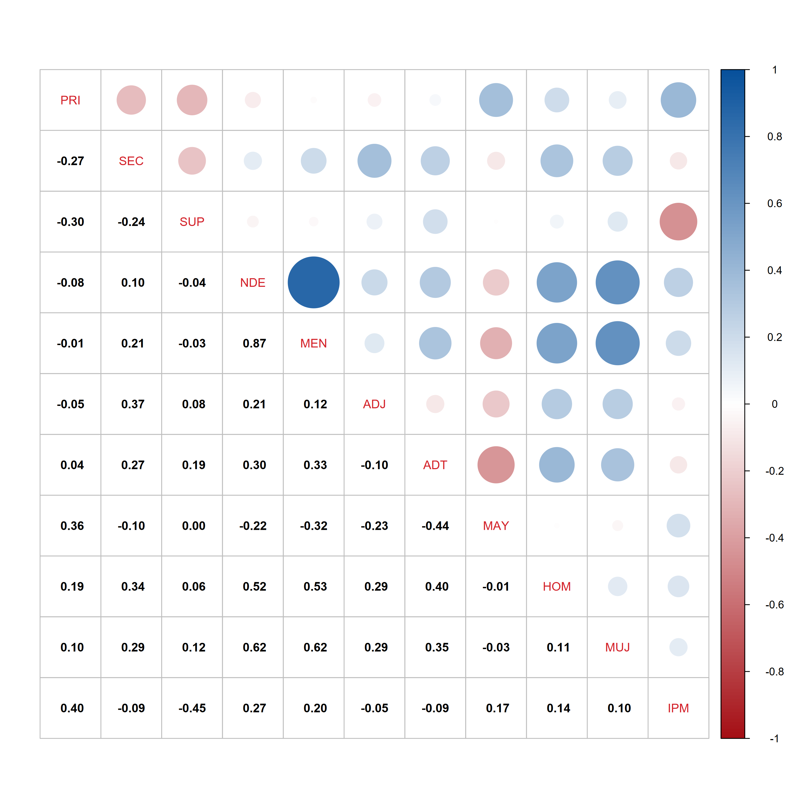
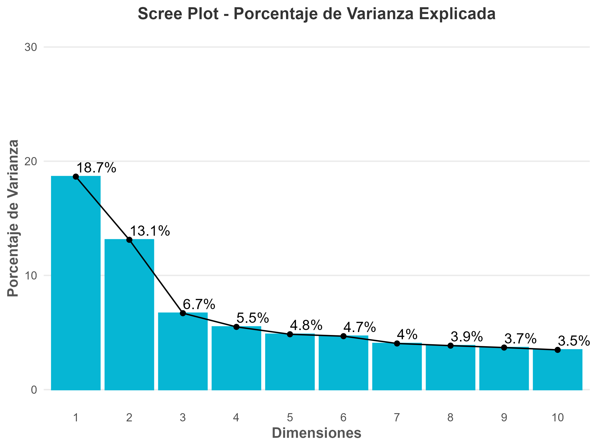
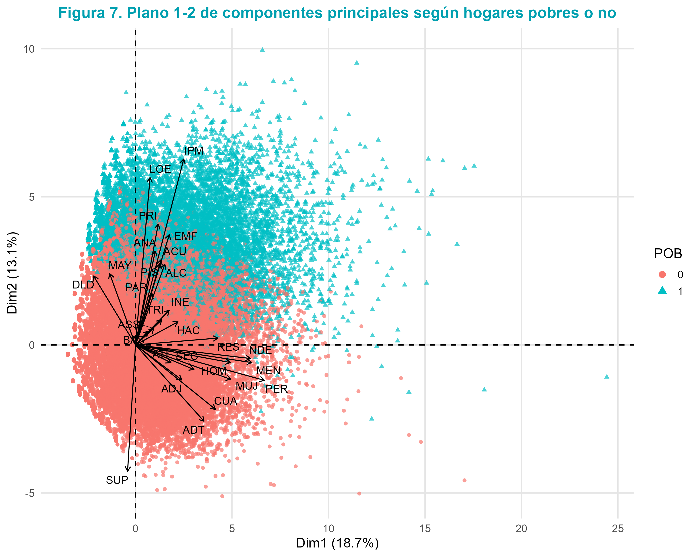
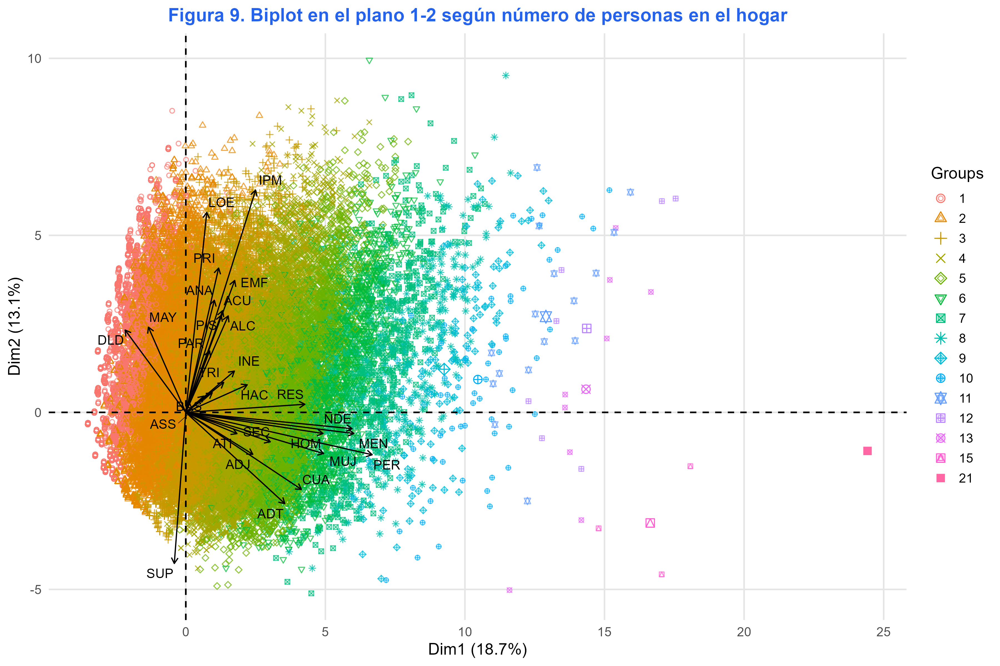
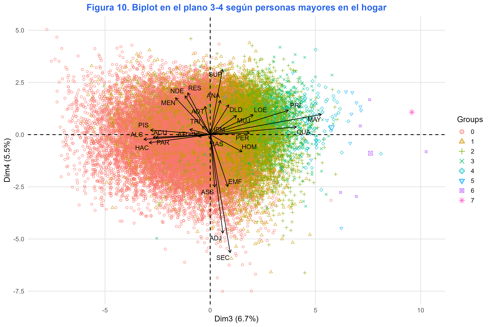

Pobreza Multidimensional en Colombia
Cruce de microdatos, estimación poblacional calibrada y lectura multivariada (PCA) de las privaciones sociales en el territorio nacional.
Resumen Ejecutivo
La pobreza multidimensional en Colombia no se define únicamente por una cifra agregada a nivel nacional: es una desigualdad territorial y socialmente estructurada.
Este informe de portafolio presenta un pipeline analítico robusto que procesa los microdatos de la Encuesta Nacional de Calidad de Vida (ECV 2025) publicada por el DANE. El objetivo principal es identificar brechas territoriales, cuantificar la intensidad de las privaciones dominantes y extraer patrones multivariados complejos mediante el Análisis de Componentes Principales (PCA).
A diferencia de los reportes estáticos oficiales, este trabajo demuestra capacidades avanzadas en el cruce de bases a nivel hogar, vivienda y personas; el uso calibrado de factores de expansión específicos (FEXP para personas e incidencia poblacional, y FEX_C para conteos de hogares); y el uso de analítica multivariante para detectar perfiles familiares vulnerables.
El promedio nacional de incidencia (9,9%) oculta dos realidades desconectadas: el eje andino/central muestra una situación favorable (Bogotá registra 2,2%), mientras las periferias geográficas registran privaciones críticas acumuladas, lideradas por la región de Amazonía - Orinoquía (18,2%) y la región Caribe (17,8%).
Cuatro Insights Estratégicos
Territorialidad
Caribe y Amazonía-Orinoquía concentran las incidencias más severas, exigiendo priorización geográfica sobre los promedios.
Educación Colectiva
El bajo logro educativo es la privación más persistente y la educación superior opera como el escudo más potente.
Informalidad Laboral
La privación en las condiciones de empleo formal actúa como un cuello de botella transversal para el desarrollo.
Carga Familiar
El tamaño del hogar, el hacinamiento y la presencia de menores correlacionan con perfiles de privación severa.
Datos y Metodología
Un pipeline reproducible que respeta los diseños muestrales complejos y traduce microdatos a información de alto valor público.
Pipeline de Datos y Estimación
Para la construcción de los indicadores, el orquestador modular en R integra las encuestas de vivienda, hogar y personas del DANE 2025. Se aplican estrictamente dos factores de expansión:
FEX_C: Factor para estimaciones a nivel de hogares (vivienda, servicios, hacinamiento).FEXP: Factor calibrado para personas (educación, empleo, demografía e incidencia total).
Para blindar la exactitud del reporte, los totales nacionales se computan con la base nacional calibrada por el DANE, mientras que las incidencias regionales se obtienen de la base departamental, eliminando desfases en las estimaciones territoriales.
Explorador Interactivo de Variables
Filtra y busca entre las 30 variables sociodemográficas y de privación incluidas en el Análisis de Componentes Principales (PCA):
Resultados Regionales
Desigualdad territorial expandida: la geografía colombiana bajo el prisma de la pobreza multidimensional.
Distribución Regional de Hogares y Personas (IPM 2025)
La siguiente tabla consolida las estimaciones calculadas en R. Resalta la asombrosa brecha: mientras en Bogotá solo el 2.2% de la población vive en hogares bajo condición de pobreza multidimensional, en la periferia de la Amazonía-Orinoquía el porcentaje escala al 18.2%, y en la región Caribe al 17.8%.
| Región Geográfica | Hogares Analizados (Expandido) | Personas Estimadas (Expandido) | Incidencia (%) | ||||
|---|---|---|---|---|---|---|---|
| No Pobre | Pobre | Total | No Pobre | Pobre | Total | ||
| Bogotá, D.C. (Cabecera) | 3.132.150 | 45.664 | 3.177.814 | 7.943.532 | 180.446 | 8.123.978 | 2,2% |
| Pacífica | 2.812.163 | 267.199 | 3.079.362 | 7.641.105 | 824.814 | 8.465.919 | 9,7% |
| Amazonía - Orinoquía | 500.269 | 83.038 | 583.307 | 1.280.990 | 284.709 | 1.565.699 | 18,2% |
| Central | 4.316.882 | 365.650 | 4.682.532 | 11.667.444 | 1.201.343 | 12.868.787 | 9,3% |
| Oriental | 3.424.329 | 224.558 | 3.648.887 | 9.473.431 | 763.190 | 10.236.621 | 7,5% |
| Caribe | 3.195.022 | 585.367 | 3.780.389 | 9.951.911 | 2.155.187 | 12.107.098 | 17,8% |
| Total nacional | 17.201.695 | 1.519.872 | 18.721.567 | 47.481.603 | 5.224.690 | 52.706.293 | 9,9% |
Fuente: estimaciones del pipeline a partir de microdatos DANE 2025.
Análisis de Privaciones Clave por Territorio

Asimetría de Pobreza
La Figura 1 ilustra visualmente la asimetría regional en el territorio colombiano. Caribe y Amazonía - Orinoquía destacan por tener una proporción visiblemente mayor de hogares pobres, superando la barra crítica nacional. En contraste, Bogotá y la región Oriental registran la mayor consolidación de hogares no pobres.
- Brecha Extrema: Amazonía-Orinoquía registra un 18,2% de pobreza frente al 2,2% de Bogotá.
- Caribe Vulnerable: Registra la segunda incidencia más alta (17,8%) con alta densidad de población.

Bajo Logro Educativo
La Figura 2 revela que el Bajo Logro Educativo (LOE) es una privación estructural en todo el país. No obstante, las regiones con mayores tasas de pobreza multidimensional, como Amazonía-Orinoquía y Caribe, muestran también los mayores rezagos en educación de sus integrantes adultos, actuando como un cuello de botella generacional.
- Trampa Intergeneracional: Los adultos sin escolaridad secundaria limitan los ingresos del hogar.
- Rezago Periférico: Las regiones alejadas del centro andino acumulan los porcentajes de LOE más altos.

Informalidad Laboral
La Figura 3 muestra que la privación de empleo formal en el hogar (informalidad) es la dimensión más transversal y alta en todas las regiones del país. En las zonas costeras y periféricas, el porcentaje roza niveles críticos, evidenciando que la informalidad laboral es el principal mecanismo de persistencia de la pobreza en Colombia.
- Vulnerabilidad Constante: Afecta a la gran mayoría de la población ocupada en las periferias.
- Sin Red de Seguridad: La informalidad laboral impide el acceso a salud contributiva y pensiones.

El Escudo de la Educación
La Figura 4 ilustra la contraparte protectora de la educación. Los hogares que acumulan 1, 2 o más personas con educación superior (SUP) tienden a concentrarse en las regiones andinas y cabeceras (como Bogotá), blindando a estas familias contra la vulnerabilidad socioeconómica.
- Efecto Protector: La educación técnica o profesional actúa como barrera de salida contra la pobreza.
- Centralización del Talento: Bogotá lidera ampliamente en la acumulación de capital humano profesional.
Estructura Multivariada (PCA)
Más allá de los promedios simples: descodificando la red latente de privaciones con Análisis de Componentes Principales.
Estructura de Correlaciones
Para entender las interdependencias de las variables, se construyeron matrices de correlación bivariada que revelan cómo se asocian las privaciones físicas del hogar con las variables de personas (demografía y educación):


El análisis resalta correlaciones sumamente fuertes entre la condición del IPM y privaciones educativas (`LOE`) y laborales (`EMF`). A nivel de personas, la presencia de integrantes con educación superior (`SUP`) correlaciona negativamente con el IPM, sirviendo como el principal factor mitigador.
Análisis de Componentes Principales
El PCA realizado sobre 28 variables sociodemográficas y de privación condensa la varianza del fenómeno. La **Figura 7** (Scree Plot) muestra el porcentaje de varianza explicada por cada componente. Las dimensiones 1 y 2 logran sintetizar los principales ejes explicativos:

Matriz de Cargas Factoriales (Tabla 3)
Las cargas de las variables en las primeras cinco componentes revelan la naturaleza latente de cada eje:
| Variable | Dim.1 (Composición/Tamaño) | Dim.2 (Pobreza/Educación) | Dim.3 (Ciclo Vital/Mayor) | Dim.4 (Jóvenes/Escolaridad) | Dim.5 (Trabajo Infantil) |
|---|
Cargas factoriales calculadas con rotación e insumos calibrados.
Visor de Planos Factoriales (Biplots)
El PCA proyecta los hogares en mapas de coordenadas. A continuación, se detalla la ordenación espacial de los hogares colombianos según su condición de pobreza, el volumen de miembros y las transiciones del ciclo vital familiar:

Brecha de Pobreza
El Plano 1-2 por Pobreza (Figura 8) discrimina fuertemente los hogares según su bienestar. El vector de condición pobre (rojo) se alinea directamente con privaciones críticas como IPM, LOE (bajo logro educativo), ANA (analfabetismo) y condiciones de empleo informal. El polo opuesto (azul) se agrupa en torno a la educación superior (SUP), estableciendo una frontera clara de ventaja social.
- Alineación del Riesgo: Las privaciones sociales y la pobreza se concentran fuertemente en el cuadrante inferior derecho.
- Escudo de Capital Humano: La educación superior (
SUP) tira de los hogares estables en la dirección opuesta.

Tamaño del Hogar
El Biplot por Tamaño de Hogar (Figura 9) revela que la Dimensión 1 ordena a los hogares de forma horizontal según su tamaño y volumen de integrantes (PER). A la derecha (tonos cálidos) se ubican los hogares grandes con alta tasa de menores de edad (MEN) y hacinamiento crítico, mientras a la izquierda se concentran los hogares unipersonales o pequeños.
- Eje de Volumen: La Dimensión 1 representa de manera casi perfecta el volumen demográfico del hogar.
- Carga Infantil: La presencia de menores de edad (
MEN) empuja la posición de los hogares hacia la derecha.

Envejecimiento Familiar
El Biplot del Plano 3-4 (Figura 10) captura las transiciones del ciclo vital y el envejecimiento familiar en el país. El eje vertical ordena los hogares por la presencia de adultos mayores de 55 años o más (MAY) y privaciones físicas de vivienda, separándolos con claridad de hogares jóvenes con cargas de escolarización activa.
- Eje de Envejecimiento: La Dimensión 3 distingue hogares con integrantes mayores de 55 años (
MAY) en el sector superior. - Contraste Generacional: En el sector inferior se encuentran hogares jóvenes con menores de 18 años y estudiantes activos.
Implicaciones de Política Pública
Traduciendo el diagnóstico analítico en rutas estratégicas y prioridades gubernamentales accionables.
Los hallazgos empíricos del IPM 2025 demuestran que la pobreza multidimensional no responde a una causa única, sino a un **ecosistema de privaciones conectadas** que difiere según el territorio y la estructura familiar.
Focalización Regional Diferenciada
Es urgente superar las asignaciones presupuestales basadas en promedios nacionales. El Caribe (especialmente departamentos rurales) y la Amazonía-Orinoquía requieren programas de infraestructura social básica (agua potable, excretas) integrados a la oferta productiva regional.
Articulación Educativa Generacional
Dado que el bajo logro educativo (`LOE`) es la privación más persistente, la política social debe conectar las transferencias monetarias condicionadas no solo con la asistencia escolar básica, sino con incentivos fuertes para la retención y tránsito efectivo a la **Educación Superior** en jóvenes de hogares vulnerables.
Protección y Formalización Laboral
La altísima privación de empleo formal en todas las regiones (incluso andinas) demuestra que los subsidios asistenciales son insuficientes. Se requiere una estrategia agresiva de formalización y protección a microempresas locales en las periferias geográficas para romper el ciclo de informalidad.
Valor del Portafolio & Conclusiones
Capacidades Técnicas Demostradas
Este proyecto de analítica social ejemplifica un flujo de trabajo extremo a extremo (End-to-End) en ciencia de datos aplicada a las políticas públicas:
- Procesamiento de Microdatos Complejos: Carga y cruce de grandes volúmenes de datos a tres niveles de desagregación (vivienda, hogar y personas), respetando diseños muestrales y factores de expansión de diseño (
FEXPyFEX_C). - Métodos Estadísticos Multivariados Robustos: Aplicación de PCA y estimaciones por regiones para separar la variación real de la estática de los promedios oficiales agregados.
- Visualización Interactiva Profesional: Creación de gráficos analíticos de alta definición (R ggplot2) y diseño de interfaz web moderna y autoejecutable.
Conclusiones Analíticas
1. La pobreza multidimensional en Colombia se comporta como un **fenómeno marcadamente espacial**. Las regiones Caribe y Amazonía-Orinoquía exhiben incidencias que duplican la media nacional, mientras Bogotá representa un polo de consolidación social y acumulación de capital humano.
2. Las dimensiones del **bajo logro educativo y la informalidad laboral** actúan como los vectores de fuerza predominantes en la ordenación factorial del PCA. Son las dos privaciones que más discriminan entre hogares vulnerables y estables en todo el territorio.
3. La **composición del hogar (tamaño de la familia y menores a cargo)** introduce un factor demográfico crítico que intensifica la vulnerabilidad, asociándose fuertemente con hacinamiento y privaciones en el ciclo vital temprano.
¿Deseas explorar los resultados tabulados?
Accede al libro de cálculo oficial en formato Excel con las tablas completas de incidencia regional y cargas de componentes principales:
Descargar Base de Resultados (Excel)